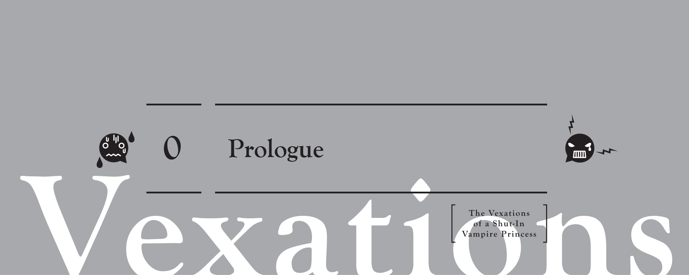

Prolog
Blood, spurting. The air, thick with the roars. Magical spells, flying every which way.
And heads, rolling.
Across the heart of the sprawling grasslands, a fierce battle was unfolding.
The Eastern Army, composed of brawny beast-folk. The army of the Lapelico Kingdom.
The Western Army, composed of a select vampire elite. The Imperial Army of Mulnite.
“Gah! The heck kinda creatures are they?!”
But the outcome of the battle was already a foregone conclusion.
The beast-folk’s morale had already weakened to a breaking point. And it took only a glance at the scene to understand why. The heaps of dead bodies strewn about the battlefield consisted almost entirely of Lapelico Kingdom soldiers.
“Fire, Fire! Burn the Trembling Forest to the ground!”
“Shit, more magic?! Let’s kill ’em all before they can cast it! Let’s…GAHHH!”
“Tony? Hey, Tony! Stay with me, Tony!”
As the bear-man rushed forward, waving his sword, he suddenly burst into flames. The remaining beast-folk could do nothing but stare slack-jawed in shock, overwhelmed by the colossal discrepancy in combat skill on display. Still, no one made any attempt to lay down their weapon. Perhaps they still had some soldier’s pride left in them. But as the air began to tingle with the ethereal singing of the vampires, many of the beast-folk gulped audibly, before all stiffened and trembled in mortal terror.
“Screw this! I’m getting outta here!”
“Ice, Ice! Freeze the hearts of our enemies!”
As a tiger-man attempted to desert under enemy fire, an arrow of ice struck him in the back of the head. His body fell to the ground with a heavy thud. The sight of this fresh corpse made the bulky beast-folk unleash animalistic howls of terror. The chain of command had collapsed. A deer-man threw aside his weapon. A cat-man howled at the skies. A lion-man began to tear out chunks of his own mane.
Yet still the vampires showed no mercy.
Instead, they doubled down on bombarding the beast-folk even as they fled in a blind panic, taking sadistic delight in shooting them, crushing them underfoot, setting them on fire, and even blowing them up. It was as if there was no greater thrill in life for the vampires than this.
“Gyaaaah!”
“Don’t! I don’t wanna die yet!”
“Aargh! My tail! My freakin’ TAIL is on FIRE!!!”
“Fire, Fire…!”
It was an all-out massacre.
Even the Supreme Commander of the Eastern Army (a chimpanzee-man) must have been wishing he could throw in the towel and go home. They could always reanimate with the power of the Dark Core, of course, but that didn’t change the fact that getting your head lopped off was painful indeed.
And who enjoys getting hurt?
Nobody.
“Battle report! Battle report! The enemy forces have been decimated! At this exact moment, Lieutenant Bellius and Captain Mellaconcey are rushing the enemy’s stronghold! The victory of the Komari Unit, of which we are all proud members, could not be more certain!”
As the victory message rang out clear and true across their stronghold, the vampires unknitted their brows and began to smile. “Not bad,” exclaimed one. “Excellent,” stated another.
It was located on the very western edge of the grasslands atop a small hill.
The Mulnite Imperial Army’s battle fortress, that is.
“It looks like we’ve done it, then!”
“Yep. Beast-folk really are far too easy.”
“Did you see that? Now that is the stuff the Komari Unit is made of!”
The strategy the vampires unleashed played out as follows:
First, the mighty warrior Lieutenant Bellius attacked the enemy stronghold with a daring front-on assault. This drew out the majority of the beast-folk forces, leaving Captain Mellaconcey free to sneak around the rear and infiltrate the fort. Then, taking advantage of the weak defenses, he easily captured their supreme commander, thus winning the engagement.
It was incredibly simple, but still more than enough to flummox the simpleminded beast-folk.
“Time for a victory party once we get home?”
“Heh-heh-heh, let’s mix some liquor with beast-blood and have a toast!”
Confident in their triumph, the vampires slung their arms around one another and laughed with crass abandon.
But among the revelers was a single male vampire whose face was a stiff mask of absolute seriousness.
“It’s too soon to celebrate. Our victory hasn’t even been officially called yet.”
Silence fell.
He wore an imposing military uniform and was so tall and thin that he resembled a stark winter tree devoid of leaves and branches.
His name was Caostel Conto, a self-proclaimed “monster” and member of the Imperial Army’s Seventh Unit, aka the Komari Unit.
“War is a clash of minds. We can never truly know what kind of ace in the hole our opponents could be hiding. Have you no shame, crowing over an undetermined victory? Cretinous fools!”
Caostel’s undeniable logic had the same sobering effect as a bucket of ice water poured on their heads. Cowed, the rest of the troop hushed.
“It’s true that Bellius and Mellaconcey are formidable fighters, with a long history of greatness in combat. But anything can happen. No game of chess was ever won in only a single move. And this is still our first skirmish. Failure at this stage is simply not an option. Is that not right, Supreme Commander Terakomari?”
All eyes shifted to a single individual.
She was sitting to Caostel’s left.
Draped across the ornate, sparkling throne, she stirred.
“Eh? Whassat?”
The young woman lifted her head, as if roused from a deep daydream.
Eventually, she seemed to realize that everyone was staring at her.
An attending maid leaned in and quickly whispered something in her ear.
“Lady Komari. Psst. Psst. Psst…”
“Huh? …Ah. Yes, of course.”
The young girl cleared her throat loudly before speaking.
“All right, listen up, everyone! Caostel’s right. This is our first battle! Nobody wants to go home a loser, right? So let’s give it our all!”
““““““…………””””””
Her high, clear voice rang out across the bloody grasslands.
All at once, her entire audience was overcome with overwhelming emotion.
She was beautiful—simply beautiful.
Golden hair, sparkling like trapped moonlight. Translucent white skin, pale as a corpse. A nose that looked as though it had been chiseled out of marble. And more striking than any other feature, the trademark crimson eyes of the Mulnite Empire’s ancient vampire bloodline. Truly, there was no finer specimen of the vampire race than she.
Her full title: Supreme Commander Terakomari Gandesblood.
“…Uh, why’s everyone so quiet all of a sudden? You are gonna do your best, aren’t you?”
The hint of concern in her voice made all present suddenly gasp.
To fail to promptly respond when their beloved and respected supreme commander was trying to rally them—such a slight could never be properly compensated for, not even if they all got stark naked and committed ritual seppuku while dancing the hokey pokey.
They all roared in response as one, loud enough to shake the very earth beneath everyone’s feet.
““““““Yes, Supreme Commander! We’ll go all out!””””””
Supreme Commander Terakomari flinched for a second, but then she merely readjusted her limbs in her cozy chair, letting their overzealous, impassioned response wash over her.
Caostel dropped to his knee at her feet.
“Supreme Commander. I have but one request.”
“Oh, wh-what is it? Spit it out.”
“In the event that Bellius and Mellaconcey have failed…would you, Supreme Commander Terakomari, apprehend the enemy commander yourself?”
Time stood still.
“…Huh? Why?”
“As I have already explained, there are no certainties in war. Even such a sparkling gem as Terakomari Gandesblood, with all her might, her abundant wisdom, and her status as the supernova who is surely the obvious candidate to succeed the throne…even such an exalted one as she, could, were the fates unkind, find herself defeated by that uncouth chimp of an enemy commander. And yet! If you were only to take this opportunity to demonstrate your proficiency, in this, our first major clash, then it would make the name of Terakomari Gandesblood ring out the world over!”
The crowd all gasped appreciatively at this.
“Yeah, but…I don’t think I should…”
“Moreover, to speak from my heart of hearts, I myself am dying to see it! The true power of Terakomari Gandesblood! I want to burn the image onto my retinas forevermore! The glory of the Crimson Lord, who, at the tender age of fifteen, has achieved the highest rank of supreme commander!”
“I want to see it, too!” “Me too, me too!” clamored the other soldiers, all gazing at their leader with the utmost admiration.
But for some reason, Supreme Commander Takamori seemed hesitant. “Er, yeah, but…,” she hedged awkwardly. Nevertheless, Caostel was dead set on encouraging her.
“There is no need for bashfulness! Let us crush that poxy country of insignificant hybrid-folk! With but one mighty deed from our commander, we can elevate the reputation of the great Mulnite Empire across the land! After which historians will proclaim it thus: That your battle was the catalyst that marked a new dawn, a new era, for the world!”
“““““YEAAAAAAH!!!”””””
Inspired by Caostel’s rousing speech, the vampires cheered raucously. Applause broke out, and before long, the din was deafening. Then a chant broke out— “Ko-ma-rin! Ko-ma-rin! Ko-ma-rin!”
In the midst of all the clamor, Supreme Commander Terakomari Gandesblood simply sat there. Then finally…
“O-okay, then…”
The cheering and applause came to an abrupt halt.
Everyone strained their ears to hear what she would say next.
Looking around at her subordinates, the supreme commander heaved a deep breath. Finally, she gave her shoulders a little shake and spoke.
“Since you all have such high expectations for me, I guess I’ll have to give it my all. But I’m only going to act if both Bellius and Mellaconcey have failed. If, and only if, the two of them fall by some freak chance, then I will put all my energy into giving the enemy the pummeling of a lifetime. That’s right, you all have nothing to fear! I’m the greatest, after all! I could fell even the mightiest enemy in about, oh, three seconds!”

“Three seconds…?”
“Ah, I misspoke! I meant one second! One! I could kill ’em all in, uh, one second each!”
It happened instantly.
The previous racket of cheering and clapping resumed anew as if it had never even paused.
—YEAAAAAAAAAH!!!
—Ko-ma-rin! Ko-ma-rin! Ko-ma-rin!!!
“Oh, ah-ha-ha… Oh my… How did things end up like this…?”
And so the curtain opens on the nerve-racking trials and tribulations of Terakomari Gandesblood…